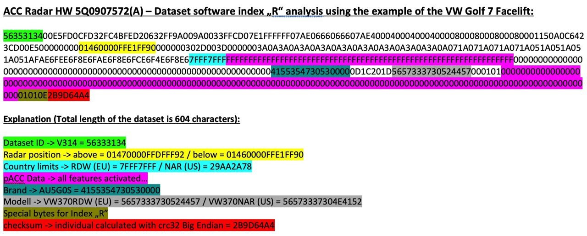

Активация ACC и pACC (SWaP)¶
Все действия вы делаете на свой страх и риск! Мы не несем ответственность за испорченное оборудование.
Для прошивки необходим ODIS Engineering 12 версии. Более ранние версии могут выдавать ошибку при прошивке - "Не распознаны варианты".
SWaP - код на основе VIN-кода автомобиля, специального индивидуализирующего признака VCRN (Vehicle Component Registration Number) блока автомобиля, к которому применяется SWaP, и непосредственно перечня функций FEC (Function Enabling Codes) или FSC (FreiSchaltungsCode).
SWaP подписывается закрытым ключом (RSA1024).
pACC (Predictive ACC) — это адаптивный круиз-контроль, который может автоматически устанавливать скорость движения с помощью картографических данных (прогнозируемых данных, PSD) и распознаваемых дорожных знаков.
Архив с генератором SWaP, прошивками и параметриями: Скачать (версия от 02.02.2022)
10009001 MRR-Paket 1: ACClow (Basis-ACC) + FrontAssist inkl. CityANB
10009002 MRR-Paket 2: ACClow (ACC FTS) + FrontAssist inkl. CityANB
10009003 MRR-Paket 3: ACClow (ACC S&G) + FrontAssist inkl. CityANB
10009004 MRR-Paket 4: FrontAssist inkl. CityANB (без ACC)
10009005 MRR-Paket 5: CityANB (без ACC)
10009006 MRR-Paket 6: ACChigh (Basis-ACC) + FrontAssist inkl. CityANB
10009007 MRR-Paket 7: ACChigh (ACC FTS) + FrontAssist inkl. CityANB
10009008 MRR-Paket 8: ACChigh (ACC S&G) + FrontAssist inkl. CityANB
10009101 ACC-Funktionserweiterungs-Paket "predictiveACC"
10009102 ACC-Funktionserweiterungs-Paket "StauAssistent" (Ассистент пробок)
10009103 ACC-Funktionserweiterungs-Paket "predictiveACC & StauAssistent"
10009201 AWV-Auspraegung "AWV1,2 - Warnung nur visuell & auditiv" (предупреждение только визуальное и слуховое)
10009202 AWV-Auspraegung "AWV1,2"
10009203 AWV-Auspraegung "AWV1,2,3"
10009204 AWV-Auspraegung "AWV1,2,3, vFGS
10009205 AWV-Auspraegung "AWV1,2,3, vFGS, vRFS“
10009300 AWV-Funktionserweiterungs-Paket "Elektronische Parkbremse"
10009301 AWV-Funktionserweiterungs-Paket "EmergencyAssist"
10009302 AWV-Funktionserweiterungs-Paket "Abbiegeassistent"
10009303 AWV-Funktionserweiterungs-Paket "AWV-Gegenverkehr"
10009304 AWV-Funktionserweiterungs-Paket "Abbiegeassistent & AWV-Gegenverkehr"
10009305 AWV-Funktionserweiterungs-Paket "EmergencyAssist & AWV-Gegenverkehr"
10009306 AWV-Funktionserweiterungs-Paket "EmergencyAssist & Abbiegeassistent"
10009307 AWV-Funktionserweiterungs-Paket "EmergencyAssist & Abbiegeassistent & AWV-Gegenverkehr"
10009500 Verkehrszeichenerkennung (VZE)
10009600 Vorrausschauender Fussgaengerschutz (VFS) - FCWP
FGS = Fußgängerschutz (Pedestrian Protection)
RFS = Radfahrer-Schutz (Bicycle Protection)
10003100 MRR-Paket 1: ACClow (Basis-ACC) + FrontAssist inkl. CityANB
10003200 MRR-Paket 2: ACClow (ACC FTS) + FrontAssist inkl. CityANB
10003300 MRR-Paket 3: ACClow (ACC S&G) + FrontAssist inkl. CityANB
10003400 MRR-Paket 4: FrontAssist inkl. CityANB (ohne ACC)
10003500 MRR-Paket 5: CityANB (ohne ACC)
10003600 MRR-Paket 6: ACChigh (Basis-ACC) + FrontAssist inkl. CityANB
10003700 MRR-Paket 7: ACChigh (ACC FTS) + FrontAssist inkl. CityANB
10003800 MRR-Paket 8: ACChigh (ACC S&G) + FrontAssist inkl. CityANB
10003900 MRR-Paket 9: ACChigh konservativ (Basis-ACC) + FrontAssist inkl. CityANB
10003A00 MRR-Paket 10: ACChigh konservativ (ACC FTS) + FrontAssist inkl. CityANB
10003B00 MRR-Paket 11: ACChigh konservativ (ACC S&G) + FrontAssist inkl. CityANB
10004000 zFAS AreaView3
10004100 zFAS Bildverarbeitung AV3/IPA
10004200 zFAS Anhaenger-Rangier-Assistent
10004300 zFAS Aktionsgenerierung Warnen
10004600 zFAS AWC Ladeplattenerkennung
10005000 Personalisierung
10006100 ACC-Funktionserweiterungs-Paket "predictiveACC"
10006200 ACC-Funktionserweiterungs-Paket "StauAssistent"
10006300 ACC-Funktionserweiterungs-Paket "predictiveACC&StauAssistent"
10007100 AWV-Auspraegung "AWV1,2 – Warnung nur visuell&auditiv"
10007200 AWV-Auspraegung "AWV1,2"
10007300 AWV-Auspraegung "AWV1,2,3"
10007400 AWV-Auspraegung "AWV1,2,3, vFGS
10008100 AWV-Funktionserweiterungs-Paket "EmergencyAssist"
10008200 AWV-Funktionserweiterungs-Paket "Abbiegeassistent"
10008300 AWV-Funktionserweiterungs-Paket "AWV-Gegenverkehr"
10008400 AWV-Funktionserweiterungs-Paket "Abbiegeassistent&AWV-Gegenverkehr"
10008500 AWV-Funktionserweiterungs-Paket "EmergencyAssist&AWV-Gegenverkehr"
10008600 AWV-Funktionserweiterungs-Paket "EmergencyAssist&Abbiegeassistent"
10008700 AWV-Funktionserweiterungs-Paket "EmergencyAssist&Abbiegeassistent&AWV-Gegenverkehr"
Структура параметрии на примере 5Q0 радара¶

Соответствие радаров и прошивок¶
| ID оборудования | Прошивка X | Прошивка | Параметрия (ODIS XML) |
|---|---|---|---|
| 2Q0907572 | FL_2Q0907572T_X383 | FL_2Q0907572AA_0396 | ARBEITS_DATEI_DSDL2.xml (доступны варианты VW и Skoda) |
| 3QF_5QF907572 | FL_5Q0907572M_X720 | FL_5Q0907572S_0780 | 13_5Q0907572R_EU_RDW.xml |
| 3Q0907572 | FL_3Q0907572A_X180 | FL_3Q0907572C_0196 | DA_013_7200_3H0_V002_VW483A2RDW.xml |
| 5Q0907572 | FL_5Q0907572E_X312 | FL_5Q0907572K_0402 | 13_5Q0907572K.xml |
Для активации адаптивного круиз контроля необходимо сначала узнать текущую версию радара, который установлен:
Обозначение системы: ACCCONTIMQB
Версия ПО: 0372
Версия АО: H01
Номер детали VW/Audi: 2Q0907572R
Номер детали АО: 2Q0907572B
Смена прошивки на радаре без изменения SWaP кода¶
-
Сделать бэкап текущих кодировок и адаптаций
-
В случае 2Q0 радара сначала необходимо установить прошивку FL_2Q0907572T_0383_BOOTLOADER_V001_S
-
Установка обычной прошивки, не X в соответствии с таблицей
-
Заливка нужной параметрии в соответствии с таблицей
-
Восстановление кодировок и адаптаций
Прошивка и генерация SWaP кода¶
-
Для начала стоит проверить, что открытый ключ отличается от требуемого значения.
Посмотреть его можно в измеряемых величинах блока 13:Если открытый ключ совпадает с одним из списка, то можно смело переходить к шагу 5!для 2Q0.. - A6 2C 69 ... для 5Q0/3QF.. - 9C 47 73... для 3Q0.. - D2 C3 3E... для 5Q0.. - "8F 51 4A... -
Принудительно на радаре активировать защиту компонентов с помощью онлайн-аккаунта ODIS Service.
Нужно начать процедуру снятия защиты компонентов (с уже снятой защитой) и в процессе отключить VAS5054A. При удачном стечении обстоятельств имеющиеся коды сопряжения будут стерты, а новые еще успеют залиться в блок, и после перезагрузки блока он упадет в CP. Если не получилось, повторяем снова. -
Установка X прошивки, например, FL_2Q0907572AA_X390___S.odx
В случае 2Q0 радара — если версия ниже 0380, то сначала необходимо установить прошивку FL_2Q0907572T_0383_BOOTLOADER_V001_S, а затем FL_2Q0907572AA_X390___S.odx -
Снять защиту компонентов
После снятия защиты необходимо убедиться, что открытый ключ изменился на нужный.
Посмотреть его можно в измеряемых величинах блока 13.Если все в порядке, переходим к генерации SWaPдля 2Q0.. - A6 2C 69 ... для 5Q0/3QF.. - 9C 47 73... для 3Q0.. - D2 C3 3E... для 5Q0.. - "8F 51 4A... -
Для генерирования SWaP кодов понадобится VCRN (Vehicle Component Registration Number).
Данный код можно вытянуть из измеряемых величин 13 блока:Блок 003 — Измеряемые величины → индивидуализирующий признак (VCRN) -
Выбор нужных FEC кодов
Максимально - 4 штуки. Они зависят от того, зависит от того какие свапы поддерживает сам радар.
Блок 003 — Измеряемые величины → Список всех функций SWaP
Например, радар 3qf907561d поддерживает: 10009000 10009100 10009200 10009300
10009008 — ACC High 210 & stop and go & fts 10009204 — front assist 10009101 — pre acc 10009307 (doesn't work for 3QF Bosch sensors -
С помощью утилиты afcg.exe сгенерировать SWaP код. Для генерации кода понадобится ввести: VIN, VCRN (из 3 шага) и набор FEC кодов через пробел
-
Полученный SWaP код необходимо ввести в адаптации 13 блока (Передача кода разблокировки функции SWaP):
Проверить, все ли сделали правильно, можно в измеряемых величинах (003 Измеряемые величины → Статус всех функций SWaP).Блок 009 — Диагностический сеанс → Режим при сходе с конвейера (EOL) Блок 008 — Право доступа → код 20103 Блок 007 — Адаптации - Передача кода разблокировки функции SWaP → Ввод сгенерированного кода в поле "Ввод данных" Блок 005 — Базовая установка UDS → Разблокировка функции SWaP Блок 003 — Измеряемые величины → Статус всех функций SWaP
Если все хорошо, то вы увидите перечень ваших FEC-кодов, для каждого из которых будет указано available, valid, condition met (доступн., действ., условие выполнено). -
Установка обычной прошивки, не X в соответствии с таблицей
-
Заливка нужной параметрии в соответствии с таблицей
-
Восстановление кодировок и адаптаций или настройка с нуля (см. ниже)
Проведение кодировок и адаптаций для первичной активации ACC¶
Настройка электроники двигателя
Блок 01 → Кодирование:
> Байт 5 – Бит 6: Активировать
→ Применить (с перезагрузкой блока)
Блок 03 → Кодирование:
> Байт 24 – Бит 3: Активировать
→ Применить (с перезагрузкой блока)
Сохранение номеров выбранных FEC кодов
В FSID группы необходимо по порядку прописать последние цифры выбранных FEC кодов (1 — 90, 2 — 91, 3 — 92, 4 — 93)
Например, выбраны FEC коды: 10009008, 10009101, 10009204, 10009307
Блок 13 → Кодирование:
> SWaP_FSID_group_1: 8
> SWaP_FSID_group_2: 1
> SWaP_FSID_group_3: 4
> SWaP_FSID_group_4: 7
→ Применить (с перезагрузкой блока)
Блок 13 → Кодирование:
> Front_camera: installed - в случае наличия камеры ассистентов
> Control_module_for_lane_assistant: installed
> Initialization_concept_front_assist
>> Initialization_1 — большая иконка ожидания готовности Front Assist в верхнем левом углу AID, Front Assist активируется только после начала движения, это значение стоит с завода;
>> Initialization_2 — маленькая иконка ожидания готовности Front Assist там же, где потом появляется иконка ACC, Front Assist активируется через пару секунд после включения зажигания и сразу видит препятствия перед машиной.
> Automatic_driveaway_by_pretrigger: Активировать
> Automatic_driveaway_after_short_stop: Активировать
> Driveaway_by_triggerleaver: Активировать
> Pretriggertime_reduction → deactivated (увеличение времени ожидания при остановке до 10 секунд)
> FPK_functions → installed (если есть кнопка Drive Mode)
> Overtaking_right_prevention → deactivated (обгон справа)
> Drive_pmode_selection → MMI_menu_ACC (выбор режима работы в меню ассистентов на магнитоле)
→ Применить (с перезагрузкой блока)
Блок 13 → Адаптация:
> Distance_Setting
>> par_Distance_Setting → on
> Adjustment_mode_time_slot_adaptive_distance_control
>> Adjustment_mode_time_slot_adaptive_distance_control → on
→ Применить
логин-пароль 20103
Настройка приборной панели
Блок 17 → Кодирование:
> adaptive_cruise_control → yes
→ Применить (с перезагрузкой блока)
Блок 19 → Кодирование:
> FPA_Funktion_ACC: Активировать
→ Применить (с перезагрузкой блока)
Блок 19 → Адаптация:
> Multi_function_steering_wheel_control_module Coding Value
>> variant → ACC-High
→ Применить
Настройка рулевой рейки (для Skoda)
Блок 16 (Электроника рулевой колонки) → Кодирование:
> Switch_for_cruise_control_integrated_in_turn_signal_switch: not installed
> Switch_for_cruise_control: installed
> Adaptive_cruise_control: installed
→ Применить (с перезагрузкой блока)
Настройка ГУ
Блок 5F → Адаптация:
> Car_Function_Adaptations_Gen2 - menu_display_ACC: Активировать
> Car_Function_Adaptations_Gen2 - menu_display_ACC_over_threshold_high: Активировать
> Car_Function_List_BAP_Gen2 - ACC_0x05: Активировать
→ Применить
логин-пароль 20103
Настройка парковочного ассистента
Блок 76 → Кодирование:
> Adaptive_cruise_control: Активировать
→ Применить (с перезагрузкой блока)
Проведение кодировок и адаптаций для активации pACC¶

Блок 13 → Кодирование:
> Traffic_sign_detection: Активировать
> Speed_limit_assitent: Активировать
> Curve_assistent: Активировать
> Kurvenassistent_CarMenu: Активировать
→ Применить (с перезагрузкой блока)
Блок 13 → Адаптация:
> Predictive speed limit control
>> par Predictive speed limit control: Активировать
→ Применить
логин-пароль 20103
Дополнительные кодировки для радаров версии 5Q¶
Блок 13 → Кодирование:
> zul_Regelabweichung_CarMenu — large
> pACC_Regulation_on_priority: Активировать
> pACC_Reaction_to_end_of_traffic_jam: with speed adaptation
> pACC_Learning_drivers_offset: Активировать
> pACC_Reaction_to_narrow_places: dynamic and static
→ Применить (с перезагрузкой блока)
логин-пароль 20103